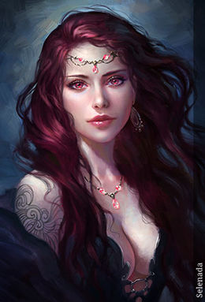
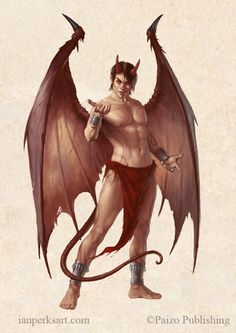
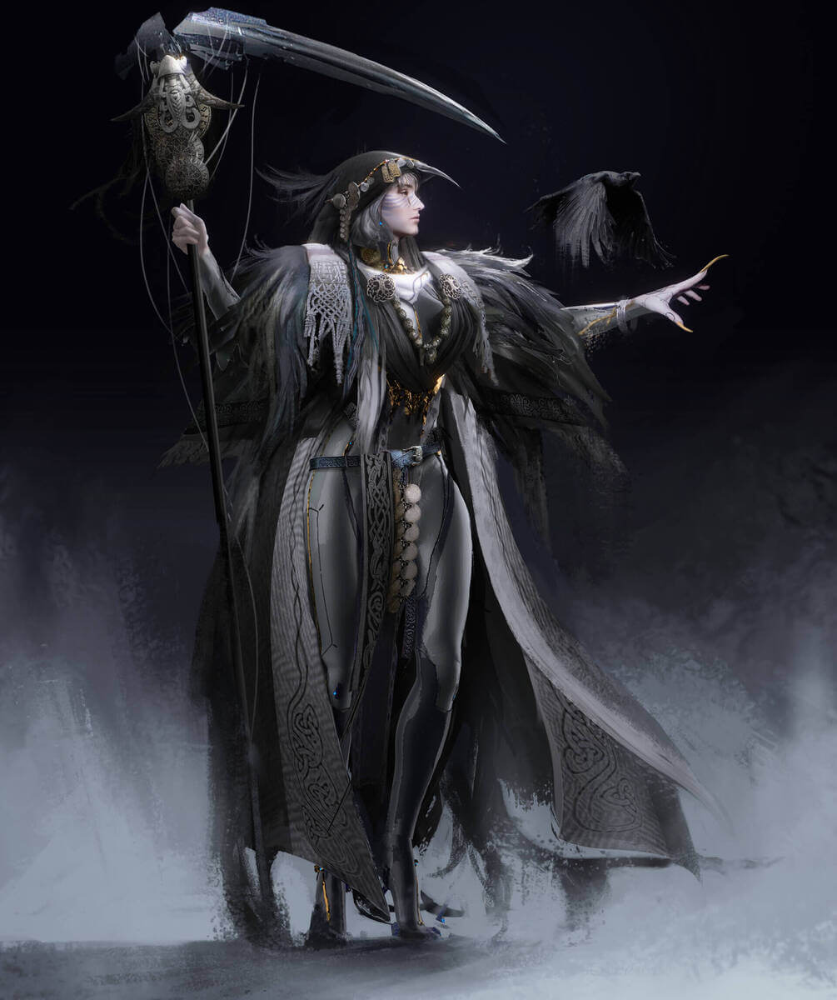
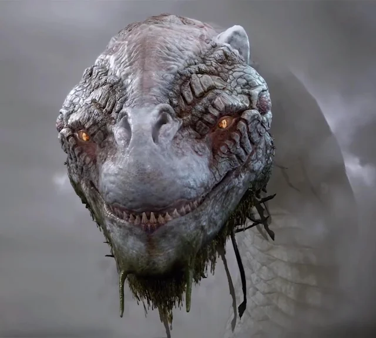

Amigos
Sucubos
Bueno uno de nuestros amigos en este lugar son los súcubos,que son demonios femeninos, que seducen a los hombres mientras duermen, drenando su energía vital a través de relaciones sexuales, son mujeres extremadamente atractivas. Su objetivo es debilitar a sus víctimas para robar su alma o su fuerza vital, es gusta divertise contigo, ese seria un resumen sobre ellos, asi que tranquilo.
Incubos
Los íncubos, basicamete son el equivalente masculino de los súcubos. Este demonio seduce a las mujeres mientras duermen, también a través de relaciones sexuales. El íncubo busca robar la energía vital de las mujeres, causándoles problemas de salud o incluso el descanso eterno, vaya, que buenos tipos.
Cerbero

Es un lindo,hermoso, adorable y amable perro de tres cabezas que guarda la entrada de nuestro hogar, impidiendo que los que no quiere estar aqui se vayan, simplemente se van sin experimentar lo mejor de este lugar, asi que los dejamos para que prueben, casi siempre despues de ello se quedan, entonces les gusta estar aqui.
Hel
La Diosa mas hermosa del infierno, ella es la reina de el lugar donde los mejores guerreros van, los que no han muerto nunca en batalla, son premiados de distintas formas, como lo hace?, no lo sabemos, pero ellos nunca vuelven, entonces al parecer son muy buenos
Jörmungandr
El o ella, no sabemos como dirigirnos, nadie sabe que es, pero es la serpiente del mundo, que rodea todos los mundos como tal, es piados@ con ustedes, si fuera yo ya los hubiera destr...consentido mucho, no solo los observaria como lo hace.